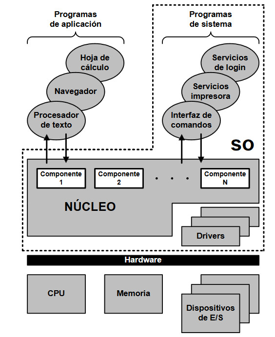

En un sistema operativo se pueden distinguir tres partes:
- Kernel (o núcleo): Es la parte que constituye fundamentalmente el sistema operativo y que le permite cumplir sus funciones, excepto la interfaz.
- Interfaz: Es la parte que permite al usuario interactuar con el sistema.
- Aplicaciones: Son programas que acompañan al núcleo y que, a través de la interfaz, nos permiten realizar trabajos en el sistema operativo. Por ejemplo, un programa para controlar los procesos existentes o manipularlos.
No hablamos de las aplicaciones de usuario sino de aplicaciones de administración del sistema operativo.